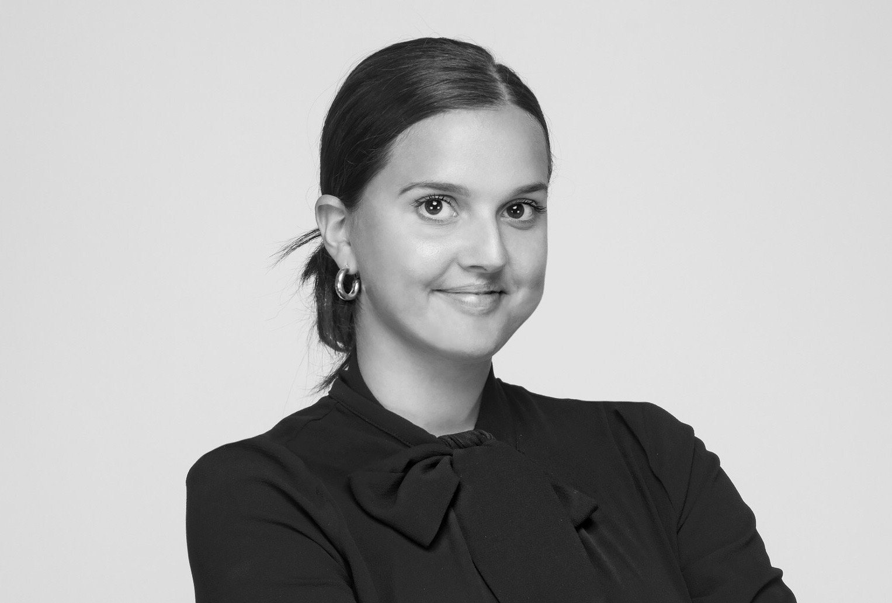

Mit navn er Kaktus og jeg studerer til hverdag på Københavns Erhvervs Akademi, som multimediedesigner. Jeg er 22 år og er født op opvokset på Frederiksberg, hvor jeg nu bor sammen med min kæreste. Jeg har gået på Medie + linjen i gymnasiet og herefter holdt 2 sabbatår. Inden gymnasiet tilbragte jeg 1 år i USA som udvekslingsstudent.
Jeg er en smilende, udadvendt pige, der nyder at snakke med nye mennesker. Kvalitetstid med min lillebror, storesøster, kæreste og mine forældre er en top prioritet i min fritid.

Kaktus Frederikke Høy Bendtsen
Hvad interessererer jeg mig for?
Jeg interesserer mig meget for det digitale, blandt andet sociale medier (især instagram). Jeg elsker at producere indhold, og går op i at vise ting fra deres bedste side.
Jeg elsker derudover at rejse, opdage nye steder, spise sushi, være ved havet, møde nye mennesker også har jeg danset i mange år.